Продолжаем изучать элементарные задачи по математике. Данный урок посвящен задачам на проценты. Мы рассмотрим несколько задач, а также затронем те моменты, которые не упоминали ранее при изучении процентов, посчитав что на первых порах они создают трудности для обучения.
Большинство задач на проценты сводятся к тому, чтобы найти процент от числá, найти число по проценту, выразить в процентах какую-либо часть, либо выразить в процентном соотношении взаимосвязь между несколькими объектами, числами, величинами.
Предварительные навыки Содержание урока- Способы нахождения процента
- Выражение числа в процентах
- Аналоги в виде дробей
- Уменьшение и увеличение процентов
- Задача на нахождение процентного соотношения
- Сравнение величин в процентах
- Задачи на концентрацию, сплавы и смеси
- Задачи для самостоятельного решения
Способы нахождения процента
Процент можно находить различными способами. Самый популярный способ — разделить число на 100 и умножить полученный результат на искомое количество процентов.
Например, чтобы найти 60% от 200 рублей, нужно сначала эти 200 рублей разделить на сто равных частей:
200 руб : 100 = 2 руб.
Когда мы делим число на 100, мы тем самым находим один процент от этого числа. Так, разделив 200 рублей на 100 частей, мы автоматически нашли 1% от двухсот рублей, то есть узнали сколько рублей прихóдится на одну часть. Как видно из примера, на одну часть (на один процент) приходится 2 рубля.
1% от 200 рублей — 2 рубля
Зная сколько рублей приходится на одну часть (на 1%), можно узнать сколько рублей приходится на две части, на три, на четыре, на пять и т.д. То есть можно найти любое количество процентов. Для этого достаточно умножить эти 2 рубля на искомое количество частей (процентов). Давайте найдём шестьдесят частей (60%)
2 руб × 60 = 120 руб.
Найдём 5%
2 руб × 5 = 10 руб.
Найдем 90%
2 руб × 90 = 180 руб.
Найдем 100%
2 руб × 100 = 200 руб.
100% это все сто частей и они составляют все 200 рублей.
Второй способ заключается в том, чтобы представить проценты в виде обыкновенной дроби и найти эту дробь от того числа, откуда требуется найти процент.
Например, найдем те же 60% от 200 рублей. Сначала предстáвим 60% в виде обыкновенной дроби. 60% это шестьдесят частей из ста, то есть шестьдесят сотых:
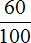
Теперь задание можно понимать как «найти от 200 рублей«. Это нахождение дроби от числа, которое мы изучали ранее. Напомним, что для нахождения дроби от числа, нужно это число разделить на знаменатель дроби и полученный результат умножить на числитель дроби
\[200 : 100 = 2\]
\[2 \times 60 = 120\]
Либо умножить число на дробь (быстрый способ нахождения дроби от числа):
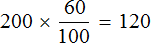
Третий способ заключается в том, чтобы представить процент в виде десятичной дроби и умножить число на эту десятичную дробь.
Например, найдем те же 60% от 200 рублей. Для начала представляем 60% в виде дроби. 60% процентов это шестьдесят частей из ста
Выполним деление в этой дроби. Перенесем запятую в числе 60 на две цифры влево:
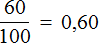
Теперь находим 0,60 от 200 рублей. Для нахождения десятичной дроби от числа, нужно это число умножить на десятичную дробь:
200 × 0,60 = 120 руб.
Приведенный способ нахождения процента является наиболее удобным, особенно если человек привык пользоваться калькулятором. Этот способ позволяет найти процент в одно действие.
Как правило выразить процент в десятичной дроби не составляет особого труда. Достаточно приписать «ноль целых» перед процентной долей, если процентная доля представляет собой двузначное число, или приписать «ноль целых» и еще один ноль, если процентная доля представляет собой однозначное число. Примеры:
60% = 0,60 — приписали ноль целых перед числом 60, поскольку число 60 является двузначным
6% = 0,06 — приписали ноль целых и еще один ноль перед числом 6, поскольку число 6 является однозначным.
При делении на 100 мы воспользовались методом передвижения запятой на две цифры влево. В ответе 0,60 ноль, стоящий после цифры 6, сохранился. Но если выполнить это деление уголком, ноль исчезает — получается ответ 0,6
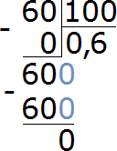
Надо помнить, что десятичные дроби 0,60 и 0,6 равны одному и тому же значению:
\[0,60 = 0,6\]
В том же «уголке» можно продолжать деление бесконечно, каждый раз приписывая к остатку ноль, но это будет бессмысленным действием:
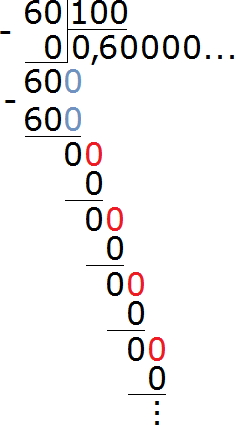
Выражать проценты в виде десятичной дроби можно не только делением на 100, но и умножением. Значок процента (%) сам по себе заменяет собой множитель 0,01. А если учитывать, что число процентов и значок процента записаны слитно, то между ними располагается «невидимый» знак умножения (×).
Так, запись 45% на самом деле выглядит следующим образом:
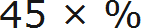
Заменим знак процента на множитель 0,01
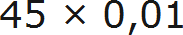
Данное умножение на 0,01 выполнятся путем перемещения запятой на две цифры влево:
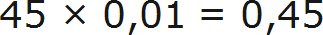
Задача 1. Бюджет семьи составляет 75 тыс. рублей в месяц. Из них 70% — деньги, заработанные папой. Какую часть заработала мама?
Решение
Всего процентов 100. Если папа заработал 70% денег, то остальные 30% денег заработала мама.
Задача 2. Бюджет семьи составляет 75 тыс. рублей в месяц. Из них 70% — деньги, заработанные папой, а 30% — деньги, заработанные мамой. Сколько денег заработал каждый?
Решение
Найдем 70 и 30 процентов от 75 тыс. рублей. Так мы определим сколько денег заработал каждый. Для удобства 70% и 30% запишем в виде десятичных дробей:
75 × 0,70 = 52,5 (тыс. руб. заработал папа)
75 × 0,30 = 22,5 (тыс. руб. заработала мама)
Проверка
\[52,5 + 22,5 = 75\]
\[75 = 75\]
Ответ: 52,5 тыс. руб. заработал папа, 22,5 руб. заработала мама.
Задача 3. При остывании хлеб теряет до 4% своей массы в результате испарения воды. Сколько килограммов испарится при остывании 12 тонн хлеба.
Решение
Переведем 12 тонн в килограммы. В одной тонне тысяча килограмм, а в 12 тоннах в 12 раз больше:
1000 × 12 = 12 000 кг
Теперь найдем 4% от 12000. Полученный результат и будет ответом к задаче:
12 000 × 0,04 = 480 кг
Ответ: при остывании 12 тонн хлеба испарится 480 килограмм.
Задача 4. Яблоки при сушке теряют 84% своей массы. Сколько получится сушенных яблок из 300 кг свежих?
Найдем 84% от 300 кг
300 : 100 × 84 = 252 кг
300 кг свежих яблок в результате сушки потеряют 252 кг своей массы. Чтобы ответить на вопрос сколько получится сушенных яблок, нужно из 300 вычесть 252
300 − 252 = 48 кг
Ответ: из 300 кг свежих яблок получится 48 кг сушенных.
Задача 5. В семенах сои содержится 20% масла. Сколько масла содержится в 700 кг сои?
Решение
Найдем 20% от 700 кг
700 × 0,20 = 140 кг
Ответ: в 700 кг сои содержится 140 кг масла
Задача 6. Гречневая крупа содержит 10% белков, 2,5% жиров и 60% углеводов. Сколько этих продуктов содержится в 14,4 ц гречневой крупы?
Решение
Переведем 14,4 центнера в килограммы. В одном центнере 100 килограмм, в 14,4 центнерах в 14,4 раз больше
100 × 14,4 = 1440 кг
Найдем 10%, 2,5% и 60% от 1440 кг
1440 × 0,10 = 144 (кг белков)
1440 × 0,025 = 36 (кг жиров)
1440 × 0,60 = 864 (кг углеводов)
Ответ: в 14,4 ц гречневой крупы содержится 144 кг белков, 36 кг жиров, 864 кг углеводов.
Задача 7. Для лесопитомника школьники собрали 60 кг семян дуба, акации, липы и клена. Желуди составляли 60%, семена клена 15%, семена липы 20% всех семян, а остальное составляли семена акации. Сколько килограммов семян акации было собрано школьниками?
Решение
Примем за 100% семена дуба, акации, липы и клена. Вычтем из этих 100% проценты, выражающие семена дуба, липы и клена. Так мы узнаем сколько процентов составляют семена акации:
100% − (60% + 15% + 20%) = 100% − 95% = 5%
Теперь находим семена акации:
60 × 0,05 = 3 кг
Ответ: школьниками было собрано 3 кг семян акации.
Проверка:
\[60 \times 0,60 = 36\]
\[60 \times 0,15 = 9\]
\[60 \times 0,20 = 12\]
\[60 \times 0,05 = 3\]
\[36 + 9 + 12 + 3 = 60\]
\[60 = 60\]
Задача 8. Купил человек продукты. Молоко стоит 60 рублей, что составляет 48% от стоимости всех покупок. Определить общую сумму денег, потраченных на продукты.
Решение
Это задача на нахождение числа по его проценту, то есть по его известной части. Такую задачу можно решать двумя способами. Первый заключается в том, чтобы выразить известное число процентов в виде десятичной дроби и найти неизвестное число по этой дроби
Выразим 48% в виде десятичной дроби
48% : 100 = 0,48
Зная, что 0,48 составляет 60 рублей, мы можем определить сумму всех покупок. Для этого нужно найти неизвестное число по десятичной дроби:
60 : 0,48 = 125 рублей
Значит, общая сумма денег, затраченных на продукты составляет 125 рублей.
Второй способ заключается в том, чтобы сначала узнать сколько денег приходится на один процент, затем полученный результат умножить на 100
48% это 60 рублей. Если мы разделим 60 рублей на 48, то узнаем сколько рублей приходится на 1%
60 : 48% = 1,25 рублей
На 1% приходится 1,25 рублей. Всего процентов 100. Если мы умножим 1,25 рублей на 100, получим общую сумму денег, затраченных на продукты
1,25 × 100 = 125 рублей
Задача 9. Из свежих слив выходит 35% сушенных. Сколько надо взять свежих слив, чтобы получить 140 кг сушенных? Сколько получится сушенных слив из 600 кг свежих?
Решение
Выразим 35% в виде десятичной дроби и найдем неизвестное число по этой дроби:
35% = 0,35
140 : 0,35 = 400 кг
Чтобы получить 140 кг сушенных слив, нужно взять 400 кг свежих.
Ответим на второй вопрос задачи — сколько получится сушенных слив из 600 кг свежих? Если из свежих слив выходит 35% сушенных, то достаточно найти эти 35% от 600 кг свежих слив
600 × 0,35 = 210 кг
Ответ: чтобы получить 140 кг сушенных слив, нужно взять 400 кг свежих. Из 600 кг свежих слив получится 210 кг сушенных.
Задача 10. Усвоение жиров организмом человека составляет 95%. За месяц ученик употребил 1,2 кг жиров. Сколько жиров может быть усвоено его организмом?
Решение
Переведем 1,2 кг в граммы
1,2 × 1000 = 1200 г
Найдем 95% от 1200 г
1200 × 0,95 = 1140 г
Ответ: 1140 г жиров может быть усвоено организмом ученика.
Выражение чисел в процентах
Процент, как было сказано ранее, можно представить в виде десятичной дроби. Для этого достаточно разделить число этих процентов на 100. Например, представим 12% в виде десятичной дроби:
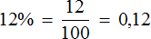
Замечание. Мы сейчас не находим процент от чего-то, а просто записываем его в виде десятичной дроби.
Но возможен и обратный процесс. Десятичная дробь может быть представлена в виде процента. Для этого нужно умножить эту дробь на 100 и поставить знак процента (%)
Представим десятичную дробь 0,12 в виде процентов
0,12 × 100 = 12%
Это действие называют выражением числа в процентах или выражением чисел в сотых долях.
Умножение и деление являются обратными операциями. К примеру, если 2 × 5 = 10, то 10 : 5 = 2
Точно так же деление можно записать в обратном порядке. Если 10 : 5 = 2, то 2 × 5 = 10:
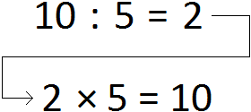
Тоже самое происходит, когда мы выражаем десятичную дробь в виде процентов. Так, 12% были выражены в виде десятичной дроби следующим образом: 12 : 100 = 0,12 но потом эти же 12% были «возвращены» с помощью умножения, записав выражение 0,12 × 100 = 12%.
Аналогично можно выразить в процентах любые другие числа, в том числе и целые. Например, выразим в процентах число 3. Умножим данное число на 100 и к полученному результату добавим знак процента:
3 × 100 = 300%
Большие проценты вида 300% поначалу могут сбивать с толку, поскольку человек привык считать 100% максимальной долей. Из дополнительных сведений о дробях мы знаем, что один целый объект можно обозначать через единицу. К примеру, если имеется целый не разрезанный торт, то его можно обозначить через 1
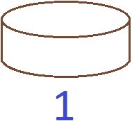
Этот же торт можно обозначить как 100% торта. В этом случае и единица и 100% будут обозначать один и тот же целый торт:
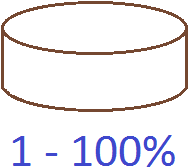
Разрежем торт пополам. В этом случае единица обратится в десятичное число 0,5 (поскольку это половина единицы), а 100% обратятся в 50% (поскольку 50 это половина от сотни)
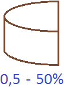
Вернем обратно целый торт, единицу и 100%
Изобразим ещё два таких торта с такими же обозначениями:
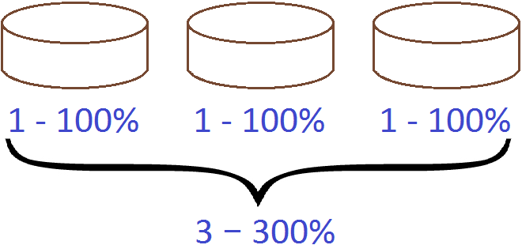
Если один торт является единицей, то три торта являются тремя единицами. Каждый торт является целым стопроцентным. Если сложить эти три сотни получится 300%.
Поэтому при переводе целых чисел в проценты, мы умножаем эти числа на 100.
Задача 2. Выразить в процентах число 5
5 × 100 = 500%
Задача 3. Выразить в процентах число 7
7 × 100 = 700%
Задача 4. Выразить в процентах число 7,5
7,5 × 100 = 750%
Задача 5. Выразить в процентах число 0,5
0,5 × 100 = 50%
Задача 6. Выразить в процентах число 0,9
0,9 × 100 = 90%
Пример 7. Выразить в процентах число 1,5
1,5 × 100 = 150%
Пример 8. Выразить в процентах число 2,8
2,8 × 100 = 280%
Задача 9. Джордж идет со школы домой. Первые пятнадцать минут он прошел 0,75 пути. В остальное время он прошел оставшиеся 0,25 пути. Выразите в процентах части пути, пройденные Джорджом.
Решение
0,75 × 100 = 75%
0,25 × 100 = 25%
Задача 10. Джона угостили половиной яблока. Выразите эту половину в процентах.
Решение
Половина яблока записывается в виде дроби 0,5. Чтобы выразить эту дробь в процентах, умножим её на 100 и к полученному результату добавим знак процента
0,5 × 100 = 50%
Аналоги в виде дробей
Величина, выраженная в процентах, имеет свой аналог в виде обычной дроби. Так, аналогом для 50% является дробь \(\frac{1}{2}\). Пятьдесят процентов также можно назвать словом «половина».
Аналогом для 25% является дробь \(\frac{1}{4}\). Двадцать пять процентов также можно назвать словом «четверть».
Аналогом для 20% является дробь \(\frac{1}{5}\). Двадцать процентов также можно назвать словами «пятая часть».
Аналогом для 40% является дробь \(\frac{2}{5}\).
Аналогом для 60% является дробь \(\frac{3}{5}\)
Пример 1. Пять сантиметров это 50% от дециметра или \(\frac{1}{2}\) или же просто половина. Во всех случаях речь идет об одной и той же величине — пяти сантиметрах из десяти
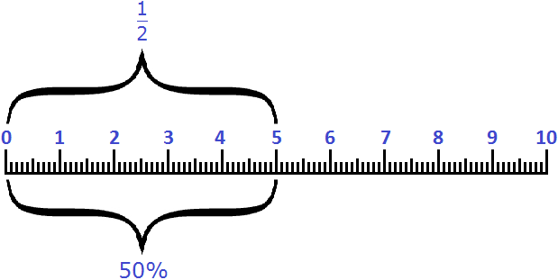
Пример 2. Два с половиной сантиметра это 25% от дециметра или \(\frac{1}{4}\) или же просто четверть
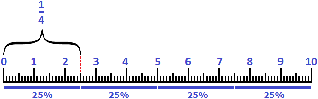
Пример 3. Два сантиметра это 20% от дециметра или \(\frac{1}{5}\)
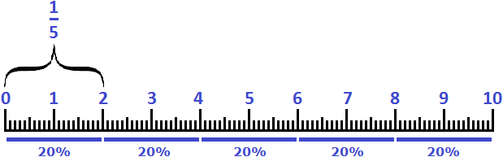
Пример 4. Четыре сантиметра это 40% от дециметра или \(\frac{2}{5}\)
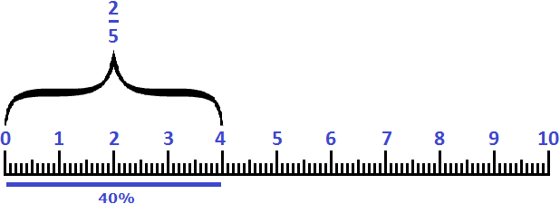
Пример 5. Шесть сантиметров это 60% от дециметра или \(\frac{3}{5}\)
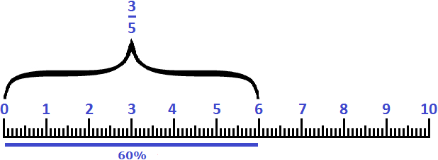
Уменьшение и увеличение процентов
При увеличении или уменьшении величины, выраженной в процентах употребляется предлог «на».
Примеры:
- Увеличить на 50% — означает увеличить величину в 1,5 раза;
- Увеличить на 100% — означает увеличить величину в 2 раза;
- Увеличить на 200% — означает увеличить в 3 раза;
- Уменьшить на 50% — означает уменьшить величину в 2 раза;
- Уменьшить на 80% — означает уменьшить в 5 раз.
Пример 1. Десять сантиметров увеличили на 50%. Сколько сантиметров получилось?
Чтобы решать подобные задачи, нужно исходную величину принимать за 100%. Исходная величина это 10 см. 50% от них составляют 5 см
Изначальные 10 см увеличили на 50% (на 5 см), значит получилось 10+5 см, то есть 15 см
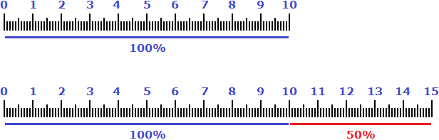
Аналогом же увеличения десяти сантиметров на 50% является множитель 1,5. Если умножить на него 10 см получится 15 см
10 × 1,5 = 15 см
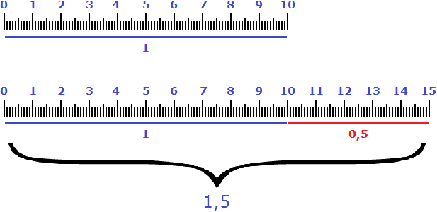
Поэтому выражения «увеличить на 50%» и «увеличить в 1,5 раза» говорят об одном и том же.
Пример 2. Пять сантиметров увеличили на 100%. Сколько сантиметров получилось?
Примем исходные пять сантиметров за 100%. Сто процентов от этих пяти сантиметров будут сами 5 см. Если увеличить 5 см на эти же 5 см, то получится 10 см
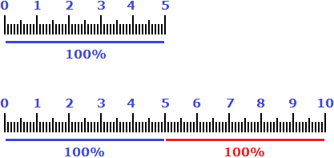
Аналогом же увеличения пяти сантиметров на 100% является множитель 2. Если умножить на него 5 см получится 10 см
5 × 2 = 10 см
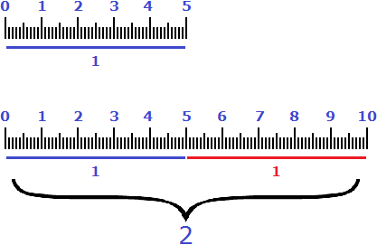
Поэтому выражения «увеличить на 100%» и «увеличить в 2 раза» говорят об одном и том же.
Пример 3. Пять сантиметров увеличили на 200%. Сколько сантиметров получилось?
Примем исходные пять сантиметров за 100%. Двести процентов это два раза по сто процентов. То есть 200% от 5 см будут составлять 10 см (по 5 см на каждые 100%). Если увеличить 5 см на эти 10 см, то получится 15 см
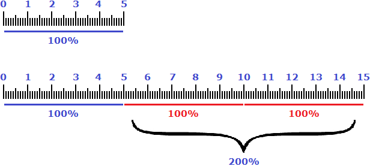
Аналогом же увеличения пяти сантиметров на 200% является множитель 3. Если умножить на него 5 см получится 15 см
5 × 3 = 15 см
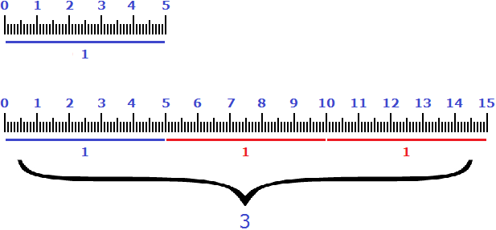
Поэтому выражения «увеличить на 200%» и «увеличить в 3 раза» говорят об одном и том же.
Пример 4. Десять сантиметров уменьшили на 50%. Сколько сантиметров осталось?
Примем исходные 10 см за 100%. Пятьдесят процентов от 10 см составляют 5 см. Если уменьшить 10 см на эти 5 см, останется 5 см
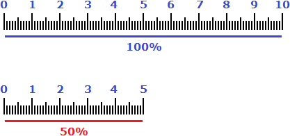
Аналогом же уменьшения десяти сантиметров на 50% является делитель 2. Если разделить на него 10 см, то получится 5 см
10 : 2 = 5 см
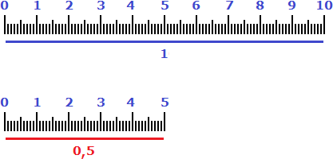
Поэтому выражения «уменьшить на 50%» и «уменьшить в 2 раза» говорят об одном и том же.
Пример 5. Десять сантиметров уменьшили на 80%. Сколько сантиметров осталось?
Примем исходные 10 см за 100%. Восемьдесят процентов от 10 см составляют 8 см. Если уменьшить 10 см на эти 8 см, останется 2 см
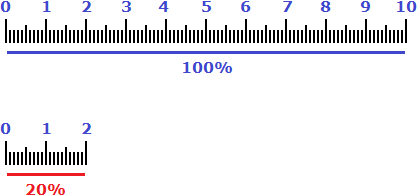
Аналогом же уменьшения десяти сантиметров на 80% является делитель 5. Если разделить на него 10 см, то получится 2 см
10 : 5 = 2 см
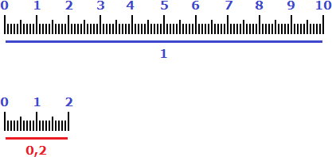
Поэтому выражения «уменьшить на 80%» и «уменьшить в 5 раз» говорят об одном и том же.
При решении задач на уменьшение и увеличение процентов, можно умножать/делить величину на указанный в задаче множитель.
Задача 1. Насколько процентов изменилась величина, если она увеличилась в 1,5 раза?
Величину о которой говорится в задаче можно обозначить как 100%. Далее умножить эти 100% на множитель 1,5
100% × 1,5 = 150%
Теперь из полученных 150% вычтем изначальные 100% и получим ответ к задаче:
150% − 100% = 50%
Задача 2. Насколько процентов изменилась величина, если она уменьшилась в 4 раза?
В этот раз будет происходить уменьшение величины, поэтому будем выполнять деление. Величину о которой говорится в задаче обозначим как 100%. Далее разделим эти 100% на делитель 4
100% : 4 = 25%
Из изначальных 100% вычтем полученные 25% и получим ответ к задаче:
100% − 25% = 75%
Значит, при уменьшении величины в 4 раза она уменьшилась на 75%.
Задача 3. Насколько процентов изменилась величина, если она уменьшилась в 5 раз?
Величину о которой говорится в задаче обозначим как 100%. Далее разделим эти 100% на делитель 5
100% : 5 = 20%
Из изначальных 100% вычтем полученные 20% и получим ответ к задаче:
100% − 20% = 80%
Значит, при уменьшении величины в 5 раз она уменьшилась на 80%.
Задача 4. Насколько процентов изменилась величина, если она уменьшилась в 10 раз?
Величину о которой говорится в задаче обозначим как 100%. Далее разделим эти 100% на делитель 10
100% : 10 = 10%
Из изначальных 100% вычтем полученные 10% и получим ответ к задаче:
100% − 10% = 90%
Значит, при уменьшении величины в 10 раз она уменьшилась на 90%.
Задача на нахождение процентного соотношения
Чтобы выразить что-либо в процентном соотношении, сначала нужно записать дробь, показывающую какую часть первое число составляет от второго, затем выполнить деление в этой дроби и полученный результат выразить в процентах.
Например, пусть имеется пять яблок. При этом два яблока являются красными, три — зелеными. Выразим красные и зеленые яблоки в процентном соотношении.
Сначала нужно узнать какую часть составляют красные яблоки. Всего яблок пять, а красных два. Значит, два из пяти или две пятых составляют красные яблоки:
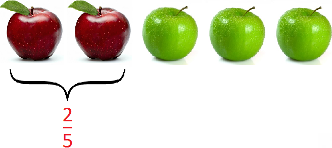
Зеленых же яблок три. Значит, три из пяти или три пятых составляют зеленые яблоки:
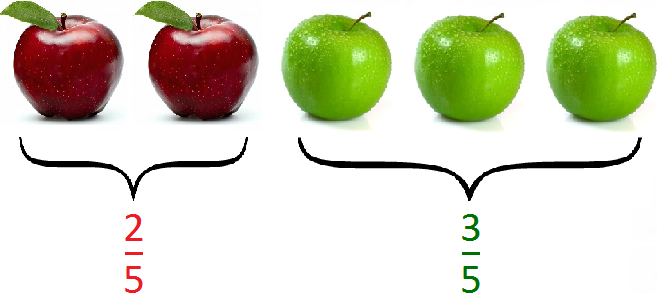
Имеем две дроби \(\frac{2}{5}\) и \(\frac{3}{5}\) . Выполним деление в этих дробях
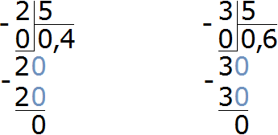
Получили десятичные дроби 0,4 и 0,6. Теперь выразим в процентах эти десятичные дроби:
0,4 × 100 = 40%
0,6 × 100 = 60%
Значит, 40% составляют красные яблоки, 60% — зеленые.
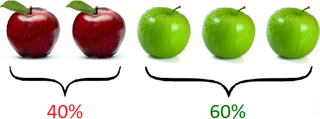
А все пять яблок составляют 40%+60%, то есть 100%
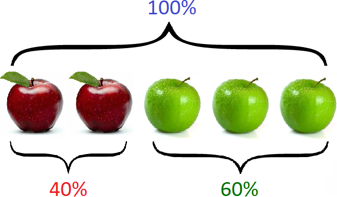
Задача 2. Двум сыновьям мама дала 200 рублей. Младшему брату мама дала 80 рублей, а старшему 120 рублей. Выразите в процентном соотношении деньги, данные каждому брату.
Решение
Младший брат получил 80 рублей из 200 рублей. Записываем дробь восемьдесят двухсотых:
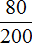
Старший брат получил 120 рублей из 200 рублей. Записываем дробь сто двадцать двухсотых:
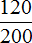
Имеем дроби и . Выполним деление в этих дробях
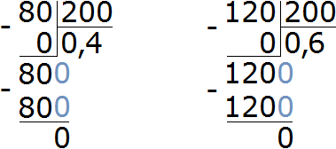
Выразим в процентах полученные результаты:
0,4 × 100 = 40%
0,6 × 100 = 60%
Значит, 40% денег получил младший брат, а 60% — старший.
Некоторые дроби, показывающие какую часть первое число составляет от второго, можно сокращать.
Так дроби и можно было бы сократить. От этого ответ к задаче не изменился бы:
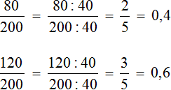
Задача 3. Бюджет семьи составляет 75 тыс. рублей в месяц. Из них 52,5 тыс. руб. — деньги, заработанные папой. 22,5 тыс. руб. — деньги, заработанные мамой. Выразите в процентах деньги, заработанные папой и мамой.
Решение
Данная задача, как и предыдущая, является задачей на нахождение процентного соотношения.
Выразим в процентах деньги, заработанные папой. Он заработал 52,5 тыс. рублей из 75 тыс. рублей
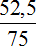
Выполним деление в этой дроби:
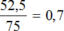
Выразим полученный результат в процентах:
0,7 × 100 = 70%
Значит, папа заработал 70% денег. Далее нетрудно догадаться, что остальные 30% денег заработала мама. Ведь 75 тыс. рублей это все 100% денег. Для уверенности сделаем проверку. Мама заработала 22,5 тыс. руб. из 75 тыс. руб. Записываем дробь, выполняем деление и выражаем в процентах полученный результат:
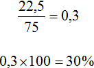
Задача 4. Школьник тренируется делать подтягивания на перекладине. В прошлом месяце он мог делать 8 подтягиваний за подход. В этом месяце он может делать 10 подтягиваний за подход. На сколько процентов он увеличил количество подтягиваний?
Решение
Узнаем на сколько больше подтягиваний школьник делает в текущем месяце, чем в прошлом
\[10 - 8 = 2\]
Узнаем какую часть два подтягивания составляют от восьми подтягиваний. Для этого найдем отношение 2 к 8
\(\frac{2}{8}\)
Выполним деление в этой дроби
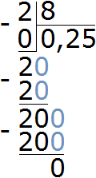
Выразим полученный результат в процентах:
0,25 × 100 = 25%
Значит, школьник увеличил количество подтягиваний на 25%.
Эту задачу можно решить и вторым, более быстрым методом — узнать во сколько раз 10 подтягиваний больше, чем 8 подтягиваний и полученный результат выразить в процентах.
Чтобы узнать во сколько раз десять подтягиваний больше восьми подтягиваний, нужно найти отношение 10 к 8
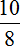
Выполним деление в получившейся дроби
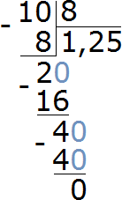
Выразим полученный результат в процентах:
1,25 × 100 = 125%
Показатель подтягиваний в текущем месяце составляет 125%. Данное высказывание нужно понимать именно как «составляет 125%», а не как «показатель увеличился на 125%». Это два разных высказывания, выражающих различные количества.
Высказывание «составляет 125%» нужно понимать как «восемь подтягиваний, которые составляют 100% плюс два подтягивания, которые составляют 25% от восьми подтягиваний». Графически это выглядит следующим образом:
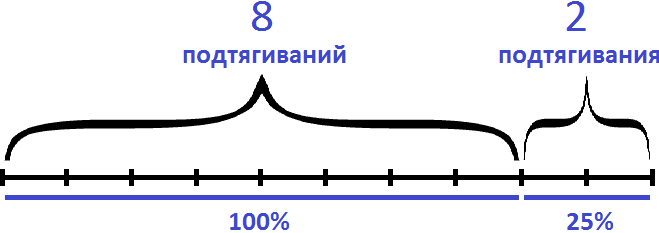
А высказывание «увеличился на 125%» нужно понимать как «к текущим восьми подтягиваниях, которые составляли 100% добавились еще 100% (еще 8 подтягиваний) плюс еще 25% (2 подтягивания)». Итого получается 18 подтягиваний
100% + 100% + 25% = 8 + 8 + 2 = 18 подтягиваний
Графически это высказывание выглядит следующим образом:
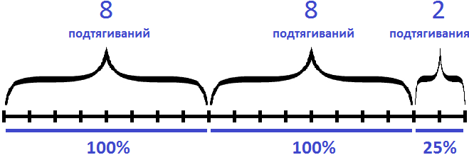
Всего же получается 225%. Если найти 225% от восьми подтягиваний, мы получим 18 подтягиваний
\[8 \times 2,25 = 18\]
Задача 5. В прошлом месяце зарплата составляла 19,2 тыс. руб. В текущем месяце она составила 20,16 тыс. руб. На сколько процентов повысилась зарплата?
Эту задачу как и предыдущую можно решать двумя способами. Первый заключается в том, чтобы сначала узнать на сколько рублей увеличилась зарплата. Далее узнать какую часть эта прибавка составляет от зарплаты прошлого месяца
Узнаем на сколько рублей повысилась зарплата:
20,16 − 19,2 = 0,96 тыс. руб.
Узнаем какую часть 0,96 тыс. руб. составляет от 19,2. Для этого найдем отношение 0,96 к 19,2
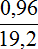
Выполним деление в получившейся дроби. По пути вспомним, как выполняется деление десятичных дробей:
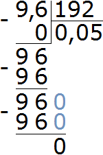
Выразим полученный результат в процентах:
0,05 × 100 = 5%
Значит, зарплата повысилась на 5%.
Решим задачу вторым способом. Узнаем во сколько раз 20,16 тыс. руб. больше, чем 19,2 тыс. руб. Для этого найдем отношение 20,16 к 19,2
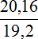
Выполним деление в получившейся дроби:
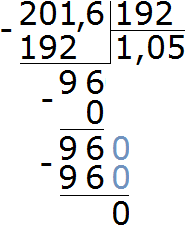
Выразим полученный результат в процентах:
1,05 × 100 = 105%
Зарплата составляет 105%. То есть сюда входят 100%, которые составляли 19,2 тыс. руб., плюс 5% которые составляют 0,96 тыс. руб.
100% + 5% = 19,2 + 0,96
Задача 6. Цена ноутбука в этом месяце повысилась на 5%. Какова его цена, если в прошлом месяце он стоил 18,3 тыс. рублей?
Решение
Найдем 5% от 18,3:
\[18,3 \times 0,05 = 0,915\]
Прибавим эти 5% к 18,3:
18,3 + 0,915 = 19,215 тыс. руб.
Ответ: цена ноутбука составляет 19,215 тыс. руб.
Задача 7. Цена ноутбука в этом месяце снизилась на 10%. Какова его цена, если в прошлом месяце он стоил 16,3 тыс. рублей?
Решение
Найдем 10% от 16,3:
\[16,3 \times 0,10 = 1,63\]
Вычтем эти 10% из 16,3:
16,3 − 1,63 = 14,67 (тыс. рублей)
Подобные задачи можно записывать кратко:
16,3 − (16,3 × 0,10) = 14,67 (тыс. рублей)
Ответ: цена ноутбука составляет 14,67 тыс. рублей.
Задача 8. В прошлом месяце цена ноутбука составляла 21 тыс. рублей. В этом месяце цена повысилась до 22,05 тыс. рублей. На сколько процентов повысилась цена?
Решение
Определим насколько рублей повысилась цена
22,05 − 21 = 1,05 (тыс. руб)
Узнаем какую часть 1,05 тыс. руб. составляет от 21 тыс. руб.
Выразим полученный результат в процентах
0,05 × 100 = 5%
Ответ: цена ноутбука повысилась на 5%
Задача 8. Рабочий должен был изготовить по плану 600 деталей, а он изготовил 900 деталей. На сколько процентов он выполнил план?
Решение
Узнаем во сколько раз 900 деталей больше, чем 600 деталей. Для этого найдем отношение 900 к 600
Значение данной дроби равно 1,5. Выразим это значение в процентах:
1,5 × 100 = 150%
Значит, рабочий выполнил план на 150%. То есть выполнил его на все 100%, изготовив 600 деталей. Затем изготовил еще 300 деталей, что составляет 50% от изначального плана.
Ответ: рабочий выполнил план на 150%.
Сравнение величин в процентах
Мы уже много раз сравнивали величины различными способами. Первым нашим инструментом была разность.
Так, к примеру чтобы сравнить 5 рублей и 3 рубля, мы записывали разность 5 − 3. Получив ответ 2, можно было сказать, что «пять рублей больше трёх рублей на два рубля».
Получаемый в результате вычитания ответ в повседневной жизни называют не «разностью», а «разницей».
Так, разница между пятью и тремя рубля составляют два рубля.
Следующим инструментом, которым мы воспользовались для сравнения величин, было отношение. Отношение позволяло нам узнать во сколько раз первое число больше второго (или сколько раз первое число содержит второе).
Так, к примеру десять яблок больше двух яблок в пять раз. Или по другому, десять яблок содержит два яблока пять раз. Данное сравнение можно записать с помощью отношения
Величины также можно сравнивать и в процентах.
Например, цену двух товаров сравнивать не в рублях, а оценивать насколько цена одного товара больше либо меньше цены другого товара в процентах.
Для сравнения величин в процентах, одну из величин нужно обозначить как 100%, а вторую исходя из условий задачи.
Например, узнаем на сколько процентов десять яблок больше, чем восемь яблок.
За 100% нужно обозначить ту величину с которой мы что-либо сравниваем.
В данном случае мы сравниваем 10 яблок с 8 яблоками. Значит за 100% обозначаем 8 яблок:
Теперь надо сравнить на сколько процентов 10 яблок больше, чем 8 яблок.
10 яблок это 8 + 2 яблока. То есть, добавив к восьми яблокам ещё два яблока, мы тем самым увеличим 100% ещё на какое-то число процентов. А чтобы узнать на какое именно, определим сколько процентов от восьми яблок составляют два яблока
Добавив эти 25% к восьми яблокам, мы получим 10 яблок. А 10 яблок это 8 + 2, то есть 100% и ещё 25%. Итого получаем 125%
Значит десять яблок больше восьми яблок на 25%.
Теперь узнаем насколько процентов восемь яблок меньше, чем десять яблок.
Мы сравниваем восемь яблок с десятью яблоками. Ране мы договорились, что за 100% будем считать то, с чем сравниваем. Поэтому в этот раз за 100% берем 10 яблок:
Восемь яблок это 10 − 2, то есть уменьшив 10 яблок на 2 яблока, мы уменьшим их на какое-то число процентов. Чтобы узнать на какое именно, определим сколько процентов от десяти яблок составляют два яблока
Отняв эти 20% от десяти яблок, мы получим 8 яблок. А 8 яблок это 10 − 2, то есть 100% и минус 20%. Итого получаем 80%
Значит восемь яблок меньше десяти яблок на 20%.
Задача 2. На сколько процентов 5000 рублей больше, чем 4000 рублей?
Решение
Примем 4000 рублей за 100%. 5 тысяч больше 4 тысяч на 1 тысячу. Значит, увеличив четыре тысячи на одну тысячу, мы увеличим четыре тысячи на какое-то количество процентов. Узнаем на какое именно. Для этого определим какую часть одна тысяча составляет от четырех тысяч:
Выразим полученный результат в процентах:
0,25 × 100 = 25%
1000 рублей от 4000 рублей составляют 25%. Если прибавить эти 25% к 4000, то получится 5000 рублей. Значит, 5000 рублей на 25% больше, чем 4000 рублей
Задача 3. На сколько процентов 4000 рублей меньше, чем 5000 рублей?
В этот раз сравниваем 4000 с 5000. Примем 5000 за 100%. Пять тысяч больше четырех тысяч на одну тысячу рублей. Узнаем какую часть одна тысяча составляет от пяти тысяч
Тысяча от пяти тысяч составляет 20%. Если вычесть эти 20% от 5000 рублей, то получим 4000 рублей.
Значит, 4000 рублей меньше 5000 рублей на 20%
Задачи на концентрацию, сплавы и смеси
Допустим, возникло желание приготовить какой-нибудь сок. У нас в распоряжении имеется вода и малиновый сироп
Нальем 200 мл воды в стакан:
Добавим 50 мл малинового сиропа и размешаем полученную жидкость. В результате у нас получится 250 мл малинового сока (200 мл воды + 50 мл сиропа = 250 мл сока)
Какую часть от получившегося сока составляет малиновый сироп?
Малиновый сироп составляет сока. Вычислим это отношение, получим число 0,20. Это число показывает количество растворённого сиропа в получившемся соке. Назовём это число концентрацией сиропа.
Концентрацией растворённого вещества называют отношение количества растворённого вещества или его массы к объему раствора.
Концентрация обычно выражается в процентах. Давайте выразим концентрацию сиропа в процентах:
0,20 × 100 = 20%
Таким образом, концентрация сиропа в малиновом соке составляет 20%.
Вещества в растворе могут быть неоднородными. Например, смешаем 3 л воды и 200 г соли.
Масса 1 л воды составляет 1 кг. Тогда масса 3 л воды будет составлять 3 кг. Переведем 3 кг в граммы, получим 3 кг = 3000 г.
Теперь в 3000 г воды опустим 200 г соли и смешаем полученную жидкость. В результате получится соленный раствор, общая масса которого будет составлять 3000+200, то есть 3200 г. Найдем концентрацию соли в полученном растворе. Для этого найдём отношение массы растворенной соли к массе раствора
Значит, при смешивании 3 л воды и 200 г соли получится 6,25%-й раствор соли.
Аналогично может быть определено количество вещества в сплаве или в смеси. Например, сплав содержит олово массой 210 г, и серебро массой 90 г. Тогда масса сплава будет составлять 210+90, то есть 300 г. Олова в сплаве будет содержаться , а серебра . В процентном соотношении олова будет 70%, а серебра 30%
При смешивании двух растворов получается новый раствор, состоящий из первого и второго растворов. У нового раствора концентрация вещества может быть другой. Полезным навыком является умение решать задачи на концентрацию, сплавы и смеси. В общем итоге смысл таких задач заключается в отслеживании изменений, которые происходят при смешивании растворов различной концентрации.
Смешаем два малиновых сока. Первый сок объемом 250 мл содержит 12,8% малинового сиропа. А второй сок объемом 300 мл содержит 15% малинового сиропа. Сольем эти два сока в большой стакан и смешаем. В результате получим новый сок объемом 550 мл.
Теперь определим концентрацию сиропа в полученном соке. Первый слитый сок объемом 250 мл содержал 12,8% сиропа. А 12,8% от 250 мл это 32 мл. Значит, первый сок содержал 32 мл сиропа.
Второй слитый сок объемом 300 мл содержал 15% сиропа. А 15% от 300 мл это 45 мл. Значит, второй сок содержал 45 мл сиропа.
Сложим количества сиропов:
32 мл + 45 мл = 77 мл
Эти 77 мл сиропа содержатся в новом соке, объем которого составляет 550 мл. Определим концентрацию сиропа в этом соке. Для этого найдём отношение 77 мл растворённого сиропа к объему сока 550 мл:
Значит, при смешивании 12,8%-го малинового сока объемом 250 мл и 15%-го малинового сока объемом 300 мл, получается 14%-й малиновый сок объемом 550 мл.
Задача 1. Имеются 3 раствора морской соли в воде: первый раствор содержит 10% соли, второй содержит 15% соли и третий — 20% соли. Смешали 130 мл первого раствора, 200 мл второго раствора и 170 мл третьего раствора. Определите сколько процентов составляет морская соль в полученном растворе.
Решение
Определим объем полученного раствора:
130 мл + 200 мл + 170 мл = 500 мл
Поскольку в первом растворе было 130 × 0,10 = 13 мл морской соли, во втором растворе 200 × 0,15 = 30 мл морской соли, а в третьем — 170 × 0,20 = 34 мл морской соли, то в полученном растворе будет содержаться 13 + 30 + 34 = 77 мл морской соли.
Определим концентрацию морской соли в полученном растворе. Для этого найдём отношение 77 мл морской соли к объему раствора 500 мл
Значит, в полученном растворе содержится 15,4% морской соли.
Задача 2. Сколько граммов воды надо добавить к 50 г раствора, содержащего 8% соли, чтобы получить 5%-й раствор?
Решение
Заметим, что если к имеющемуся раствору добавить воды, то количество соли в нём не изменится. Изменится только её процентное содержание, поскольку добавление воды в раствор приведёт к изменению его массы.
Нам нужно добавить такое количество воды при котором восемь процентов соли стали бы пятью процентами.
Определим сколько граммов соли содержится в 50 г раствора. Для этого найдем 8% от 50
50 г × 0,08 = 4 г
8% от 50 г составляют 4 г. Другими словами, на восемь частей из ста приходятся 4 грамма соли. Давайте сделаем так, чтобы эти 4 грамма приходились не на восемь частей, а на пять частей, то есть на 5%
4 грамма — 5%
Теперь зная, что на 5% раствора приходятся 4 грамма, мы можем найти массу всего раствора. Для этого нужно найти число по его проценту:
4 г : 5 = 0,8 г
0,8 г × 100 = 80 г
80 граммов раствора это масса при которой 4 грамма соли будут приходиться на 5% раствора. А для получения этих 80 граммов, нужно к изначальным 50 граммам добавить 30 граммов воды.
Значит, для получения 5%-го раствора соли, нужно к имеющемуся раствору добавить 30 г воды.
Задача 2. Виноград содержит 91% влаги, а изюм – 7%. Сколько килограммов винограда требуется для получения 21 килограмма изюма?
Решение
Виноград состоит из влаги и чистого вещества. Если в свежем винограде содержится 91% влаги, то на остальные 9% будет приходиться чистое вещество этого винограда:
Изюм же содержит 93% чистого вещества и 7% влаги:
Заметим, что в процессе превращения винограда в изюм, исчезает только влага этого винограда. Чистое вещество остаётся без изменения. После того, как виноград превратится в изюм, в получившемся изюме будет 7% влаги и 93% чистого вещества.
Определим сколько чистого вещества содержится в 21 кг изюма. Для этого найдем 93% от 21 кг
21 кг × 0,93 = 19,53 кг
Теперь вернемся к первому рисунку. Наша задача состояла в том, чтобы определить сколько винограда нужно взять для получения 21 кг изюма. Чистое вещество массой 19,53 кг будет приходиться на 9% винограда:
Теперь зная, что 9% чистого вещества составляют 19,53 кг, мы можем определить сколько винограда требуется для получения 21 кг изюма. Для этого нужно найти число по его проценту:
19,53 кг : 9 = 2,17 кг
2,17 кг × 100 = 217 кг
Значит, для получения 21 кг изюма нужно взять 217 кг винограда.
Задача 3. В сплаве олова и меди медь составляет 85%. Сколько надо взять сплава, чтобы в нём содержалось 4,5 кг олова?
Решение
Если в сплаве медь составляет 85%, то на остальные 15% будет приходиться олово:
Спрашивается сколько надо взять сплава, чтобы в нем содержалось 4,5 олова. Поскольку олова в сплаве содержится 15%, то 4,5 кг олова и будут приходиться на эти 15%.
А зная, что 4,5 кг сплава составляют 15% мы можем определить массу всего сплава. Для этого нужно найти число по его проценту:
4,5 кг : 15 = 0,3 кг
0,3 кг × 100 = 30 кг
Значит, сплава нужно взять 30 кг, чтобы в нём содержалось 4,5 кг олова.
Задача 4. Смешали некоторое количество 12%-го раствора соляной кислоты с таким же количеством 20%-го раствора этой же кислоты. Найти концентрацию получившейся соляной кислоты.
Решение
Изобразим на рисунке первый раствор в виде прямой линии и выделим на нём 12%
Поскольку количество растворов одинаково, рядом можно изобразить такой же рисунок, иллюстрирующий второй раствор с содержанием соляной кислоты 20%
У нас получилось двести частей раствора (100% + 100%), тридцать две части из которых составляют соляную кислоту (12% + 20%)
Определим какую часть 32 части составляют от 200 частей
Значит, при смешивании 12%-го раствора соляной кислоты с таким же количеством 20%-го раствора этой же кислоты получится 16%-й раствор соляной кислоты.
Для проверки представим, что масса первого раствора была 2 кг. Масса второго раствора так же будет составлять 2 кг. Тогда при смешивании этих растворов получится 4 кг раствора. В первом растворе соляной кислоты было 2 × 0,12 = 0,24 кг, а во втором — 2 × 0,20 = 0,40 кг. Тогда в новом растворе соляной кислоты будет 0,24 + 0,40 = 0,64 кг. Концентрация соляной кислоты составит 16%
Задачи для самостоятельного решения
Показать решение
Показать решение
Показать решение
Показать решение
Показать решение
Показать решение
Показать решение
Показать решение
Показать решение
Показать решение
Решение
Найдем 20% от 50
\[50 \times 0,20 = 10\]
Прибавим полученное число 10 к числу 50, получим новое значение 60
\[50 + 10 = 60\]
Ответ: новое значение равно 60.
 увеличили на 60%. Найти новое значение числа.
увеличили на 60%. Найти новое значение числа.Показать решение
Решение
Найдем 60% от и прибавим их к . Так мы определим новое значение числа.
Для удобства нахождения шестидесяти процентов от , заменим 60% на его аналог в виде обыкновенной дроби . Умножив на , мы найдем 60% от числа
Теперь увеличим число на найденные 60%, т.е. на число 
Ответ: новое значение равно
Задача 12. Ответьте на следующие вопросы:
1) Потратили 80 % суммы. Сколько процентов этой суммы осталось?
2) Мужчины составляют 75 % всех работников завода. Сколько процентов работников завода составляют женщины?
3) Девочки составляют 40 % класса. Сколько процентов класса составляют мальчики?
Показать решение
Ответы
1) 20%
2) 25%
3) 60%
Задача 13. Ответьте на следующие вопросы:
1) В магазин привезли 2500 кг помидоров. В первый день продали 30% всех помидоров. Сколько килограммов помидоров осталось продать?
2) В школе 400 учащихся, 52 % этого числа составляют девочки. Сколько мальчиков в школе?
Показать решение
Ответы:
1) 1750;
2) 192.
Показать решение
Решение
Воспользуемся переменной. Пусть A это исходное число о котором говорится в задаче. Примем это исходное число А за 100%
Увеличим это исходное число A на 25%
Теперь новое число составляет 125%. Узнаем какую часть от 125% составляет 25%. Для этого найдем отношение 25% к 125%
Выразим полученный результат в процентах:
0,2 × 100 = 20%
Ответ: чтобы получить исходное число, новое число надо уменьшить на 20%.
Показать решение
Решение
Воспользуемся переменной. Пусть P это исходное число о котором говорится в задаче. Примем это исходное число P за 100%
Уменьшим это исходное число P на 50%
Теперь новое число составляет 50% от исходного числа. Узнаем во сколько раз исходное число P больше нового числа. Для этого найдем отношение 100% к 50%
Исходное число в два раза больше нового. Это видно даже по рисунку. А чтобы сделать новое число равным исходному, его нужно увеличить в два раза. А увеличить число в два раза означает увеличить его на 100%.
Значит, новое число, которое составляет половину от исходного числа, нужно увеличить на 100%.
Рассматривая новое число, его также принимают за 100%. Так, на приведенном рисунке новое число является половиной от исходного числа и подписано как 50%. По отношению к исходному числу новое число является половиной. Но если рассматривать его отдельно от исходного, его нужно принимать за 100%.
Поэтому на рисунке, новое число которое изображается линией, сначала было обозначено как 50%. Но затем это число мы обозначили как 100%.
Ответ: чтобы получить исходное число, новое число надо увеличить на 100%.
В этом месяце этот показатель снизился до 6. На сколько процентов снизилось количество ДТП?
Показать решение
Решение
В прошлом месяце было 15 ДТП. В этом месяце 6. Значит, количество ДТП снизилось на 9.
Примем 15 ДТП за 100%. Снизив 15 ДТП на 9, мы снизим их на какое-то число процентов. Чтобы узнать на какое именно, узнаем какую часть 9 ДТП составляет от 15 ДТП
9 ДТП от 15 составляет 60%. Значит, количество ДТП снизилось на 60%.
Ответ: количество ДТП снизилось на 60%.
Показать решение
Решение
Сложим массы исходных растворов:
8 кг + 12 кг = 20 кг
В первом растворе было 8 × 0,18 = 1,44 кг вещества, а во втором растворе 12 × 0,08 = 0,96 кг этого же вещества. Тогда в получившемся растворе будет 1,44 + 0,96 = 2,40 кг.
Определим концентрацию вещества в получившемся растворе:
Ответ: концентрация получившегося раствора составляет 12%.
Показать решение
Решение
Масса обоих растворов одинакова. Каждый раствор можно принять за 100%. После сложения растворов получится 200% раствора. В первом растворе было 11% вещества, а во втором 19% вещества. Тогда в получившемся 200%-м растворе будет 11% + 19% = 30% вещества.
Определим концентрацию получившегося растворе. Для этого узнаем какую часть тридцать частей вещества составляют от двухсот частей вещества:
Ответ: концентрация получившегося раствора составляет 15%.
Показать решение
Решение
Примем первоначальную цену на продукты питания за 100%. Для удобства решения задачи, проценты будем выражать в десятичных дробях. Тогда 100% в виде десятичной дроби будут записаны как 1.
За первый месяц цена повысилась на 10%. Прибавим к имеющейся цене 1 десять процентов от этой цены, получим 1 + 0,10 × 1. Эта сумма равна выражению 1,10. Значит, цена за первый месяц станет 1,10.
За второй месяц цена также повысилась на 10%. Прибавим к нынешней цене 1,10 десять процентов от этой цены, получим 1,10 + 0,10 × 1,10. Эта сумма равна выражению 1,21. Значит, цена за второй месяц станет 1,21.
За третий месяц цена также повысилась на 10%. Прибавим к нынешней цене 1,21 десять процентов от этой цены, получим 1,21 + 0,10 × 1,21. Эта сумма равна выражению 1,331. Тогда цена за третий месяц станет 1,331.
Вычислим разницу между новой и старой ценой. Если изначальная цена была равна 1, то повысилась она на 1,331 − 1 = 0,331. Выразим этот результат в процентах, получим 0,331 × 100 = 33,1%
Ответ: за 3 месяца цены на продукты питания повысились на 33,1%.
Понравился урок?
Вступай в нашу новую группу Вконтакте и начни получать уведомления о новых уроках